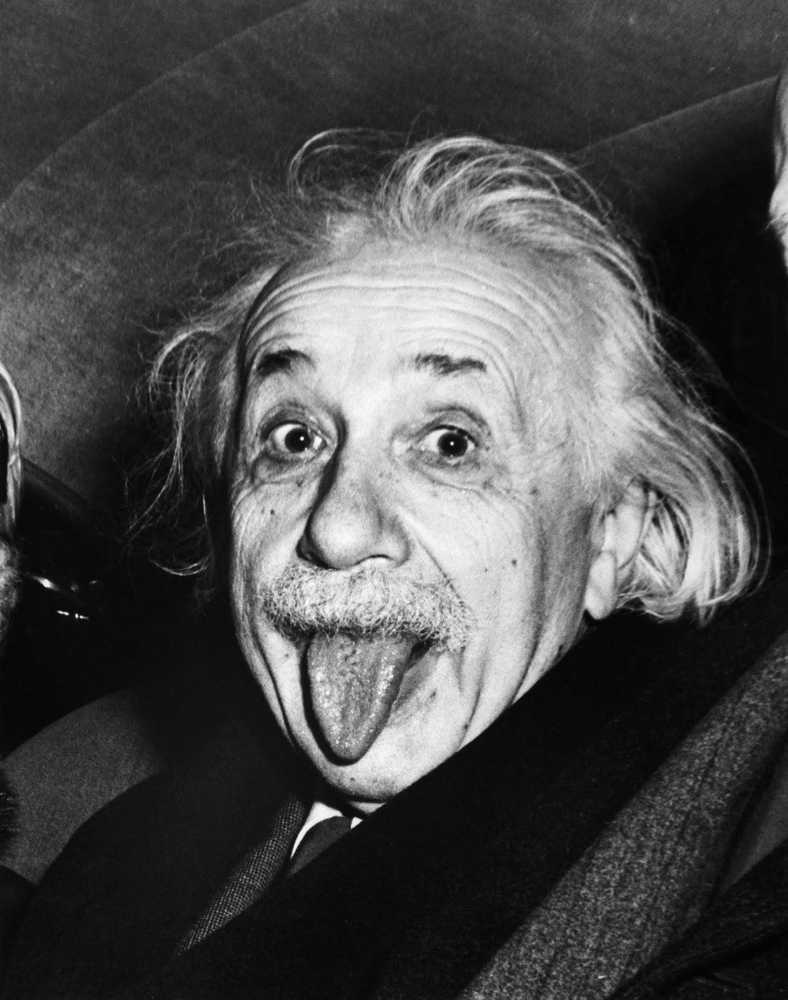

1905
On a Heuristic Viewpoint Concerning the Production and Transformation of Light
Annalen der Physik
Explains the photoelectric effect by proposing that light is exchanged only in discrete amounts called quanta.
Read more
I was born in Ulm, Germany, on 14 March 1879. When I was five and stuck in bed with an illness, my father handed me a compass, and I could not stop wondering what invisible thing kept turning its needle. That question never really left me.
By twelve I was teaching myself algebra and geometry. After finishing my studies in Zurich in 1900, I took a job examining inventions at the Swiss Patent Office in Bern and did my physics in the hours around that work. In 1905 it paid off: within a single year I published four papers, on the photoelectric effect, Brownian motion, special relativity, and the link between mass and energy.
Ten years later I completed the general theory of relativity, which describes gravity as the bending of space and time. The 1921 Nobel Prize in Physics followed, awarded mainly for my explanation of the photoelectric effect.
Since 1933 my home has been the Institute for Advanced Study in Princeton, New Jersey. Away from physics, you will most likely find me with my violin, often playing Mozart, or out on the water in my sailboat.
1905
Annalen der Physik
Explains the photoelectric effect by proposing that light is exchanged only in discrete amounts called quanta.
Read more
1905
Annalen der Physik
Explains Brownian motion and gives firm evidence that atoms and molecules exist.
Read more
1905
Annalen der Physik
Introduces the special theory of relativity, reconciling the laws of electricity and magnetism with the laws of mechanics.
Read more
1905
Annalen der Physik
Shows that mass and energy are equivalent, which gives the famous equation E = mc².
Read more
1915
Proceedings of the Prussian Academy of Sciences
Presents the field equations of general relativity, which describe gravity as the warping of spacetime by mass.
Read more
1917
Physikalische Zeitschrift
Proposes stimulated emission, the physical process that makes the laser possible.
Read moreLooking for more? See the full list of my papers and books